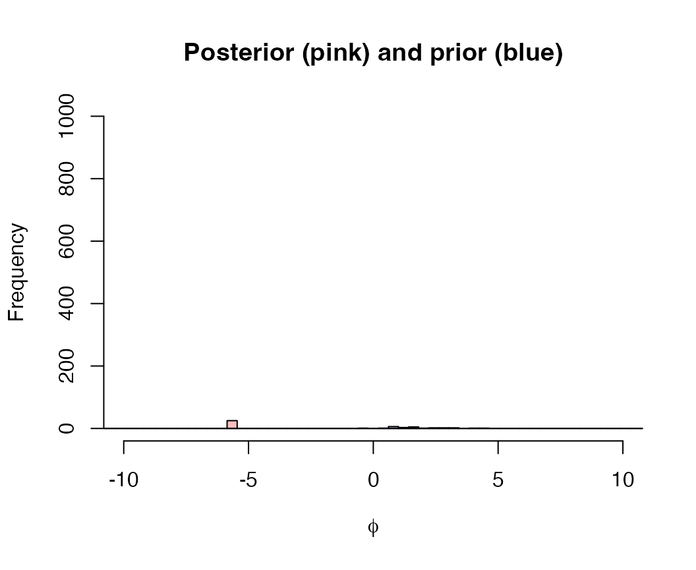

Let’s load the necessary packages:
This vignette is designed to illustrate the interaction between the units that responses are measured on, and the scale of the prior distribution on overdispersion, \(\phi\).
We will demonstrate this sensitivity with the cod stomach contents data included with the package. The original units reported are in grams (so numbers in each cell are up to several thousand).
We’ll ignore the important covariates (year, season) and just treat all observations (rows) as replicates.
The overdispersion parameter \(\phi\) is assigned a prior so that \(1/\phi \sim Cauchy(0,\sigma)\) where \(\sigma\) represents the scale parameter. Because \(\phi\) has to be positive, this prior is also assigned a lower bound of 0 (half-Cauchy).
Using our cod diet data, we can fit the model with several different values of the prior scale, and look at the prior versus posterior draws for \(\phi\). First, we’ll use the default prior of \(\sigma=5\).
set.seed(123)
fit_1 <- fit_zoid(data_matrix = as.matrix(data_matrix),
overdispersion = TRUE,
overdispersion_sd = 5,
chains=1,
iter=mcmc_iter, refresh=0)Now we can compare the prior and posterior distributions; because these are skewed, we’ll show them in log-space.
prior = data.frame("value" = fit_1$overdispersion_prior,
"dist"="prior")
post = data.frame("value" = rstan::extract(fit_1$model,"phi")$phi,
"dist"="post")
hist(log(fit_1$overdispersion_prior), breaks=seq(-20,20,length.out=100), col=rgb(0,0,1,1/4), xlim=c(-10,10),ylim=c(0,1000), main="Posterior (pink) and prior (blue)", xlab=expression(phi))
hist(log(rstan::extract(fit_1$model,"phi")$phi),breaks=seq(-20,20,length.out=100), col=rgb(1,0,0,1/4), add=T)
Next we can try re-fitting the model with a lot more informative (smaller) value of \(\sigma\). We can calculate the percent overlap across each iteration to quantify similarity between prior and posterior.
df = data.frame("sd"=exp(seq(log(0.001),log(0.1),length.out=length_out)),overlap=0)
for(i in 1:nrow(df)) {
fit_1 <- fit_zoid(data_matrix = as.matrix(data_matrix),
overdispersion = TRUE,
overdispersion_sd = df$sd[i],
chains=1,
iter=mcmc_iter, refresh=0)
df$overlap[i] = length(which(fit_1$overdispersion_prior < max(rstan::extract(fit_1$model,"phi")$phi))) / length(fit_1$overdispersion_prior)
}
plot(df$sd,df$overlap, xlab="Prior SD", ylab="% Overlap",main="Data units: grams",type="b")As a sensitivity, we will change the units of the original data from grams to kilograms.
data_matrix = data_matrix / 1000Now, we repeat the sensitivity as a function of the prior scale \(\sigma\).
df = data.frame("sd"=exp(seq(log(0.001),log(20),length.out=length_out)),overlap=0)
for(i in 1:nrow(df)) {
fit_1 <- fit_zoid(data_matrix = as.matrix(data_matrix),
overdispersion = TRUE,
overdispersion_sd = df$sd[i],
chains=1,
iter=mcmc_iter, refresh=0)
df$overlap[i] = length(which(fit_1$overdispersion_prior < max(rstan::extract(fit_1$model,"phi")$phi))) / length(fit_1$overdispersion_prior)
}
plot(df$sd,df$overlap, xlab="Prior SD", ylab="% Overlap",main="Data units: kilograms",type="b")To answer whether rescaling the data has any impact on parameters other than overdispersion, we can compare the model fit in grams to that fit with kg. We find no differences between the point estimates of proportions or uncertainty intervals.
data("coddiet")
data_matrix = coddiet[,names(coddiet)%in%c("Year","Season")==FALSE]
fit_1 <- fit_zoid(data_matrix = as.matrix(data_matrix),
overdispersion = TRUE,
overdispersion_sd = 5,
chains=1,
iter=mcmc_iter, refresh=0)
fit_2 <- fit_zoid(data_matrix = as.matrix(data_matrix)/1000,
overdispersion = TRUE,
overdispersion_sd = 5,
chains=1,
iter=mcmc_iter, refresh=0)
pars_g = get_fitted(fit_1)
pars_kg = get_fitted(fit_2)
plot(pars_g$hi-pars_g$lo, pars_kg$hi-pars_kg$lo,main="",xlab="95% CI width (g)", ylab="95% CI width (kg)")
abline(0,1,col="red")